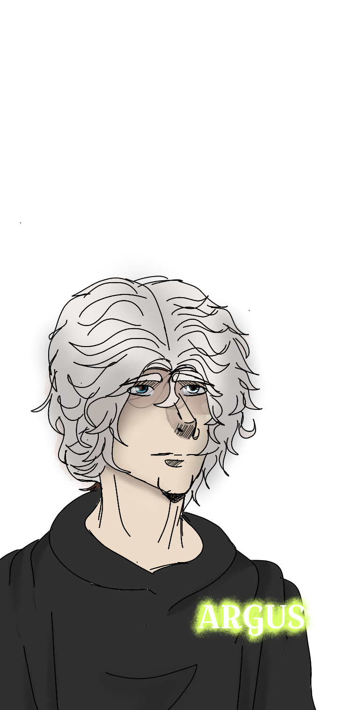
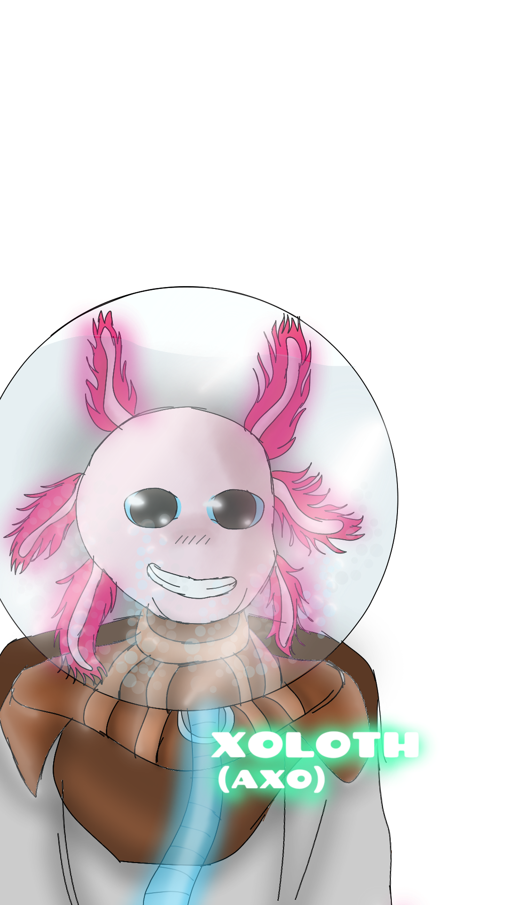
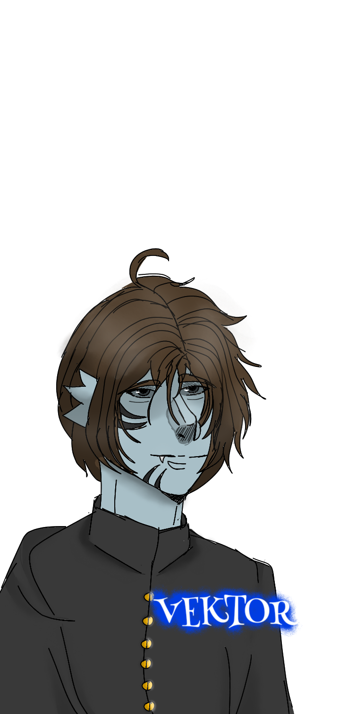
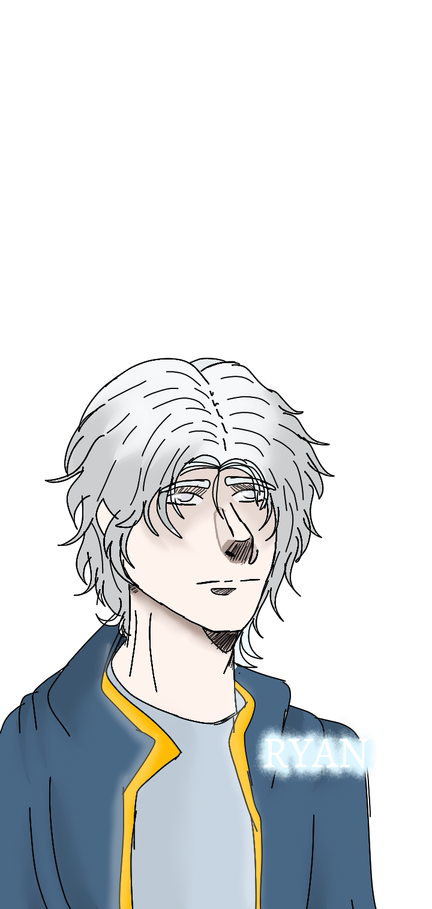
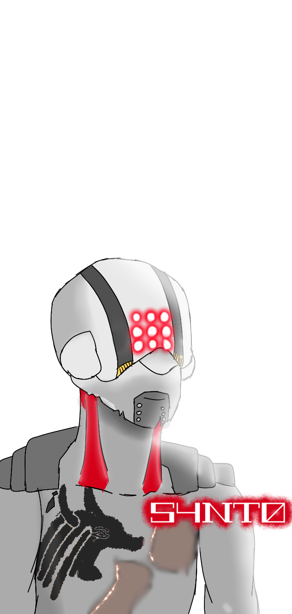
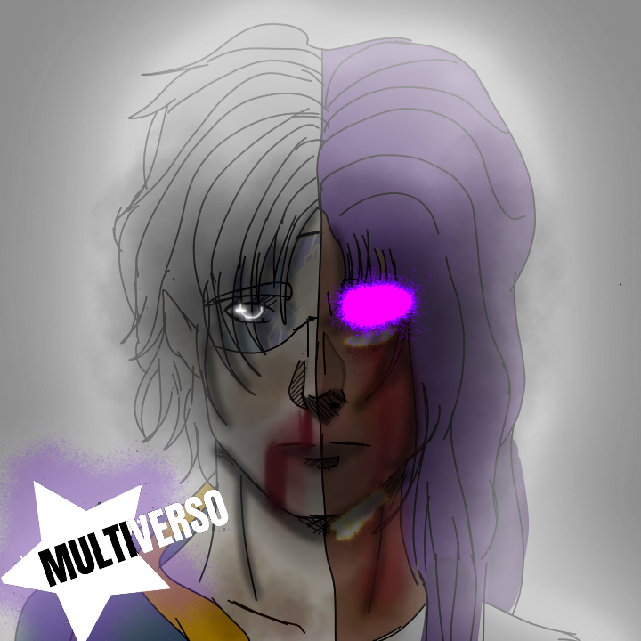
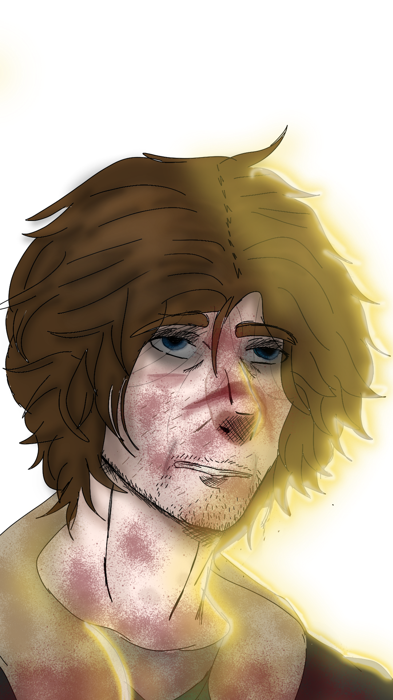
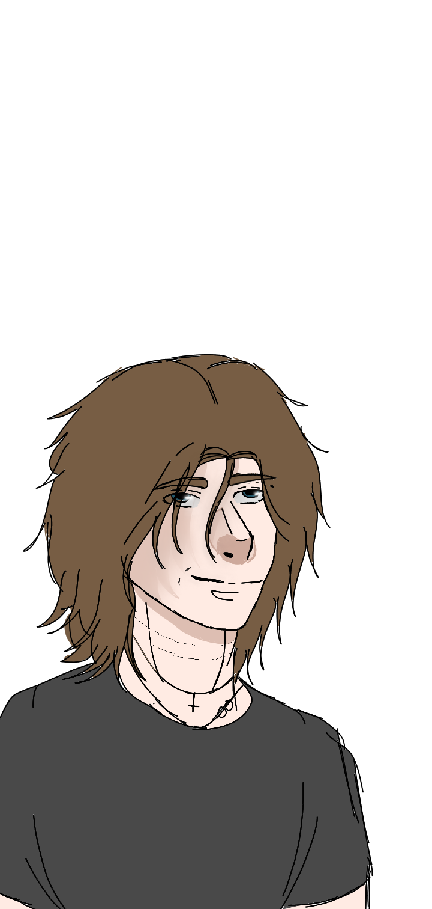
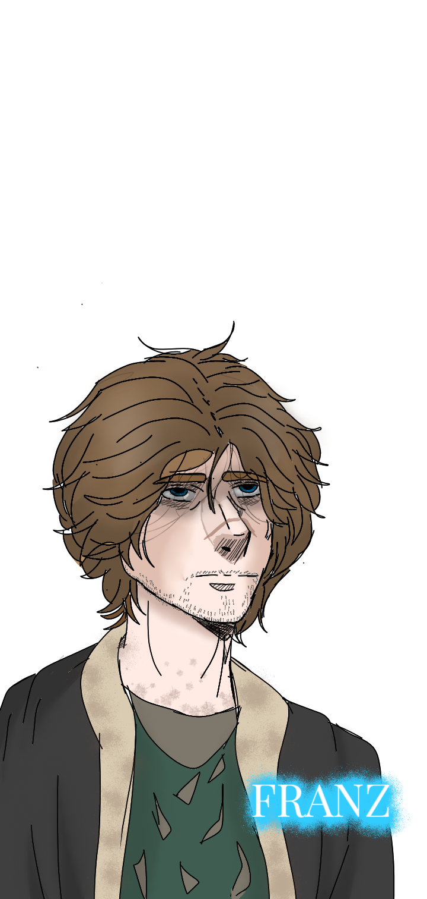

★OFICINA DO ANIMAL
☆Arte do Argus

☆Arte do Axo

☆Arte do Vektor

☆Arte Ryan

☆Arte S4nt0

☆Capa Starlis e Ryan

☆Arte Franz

☆Arte Franz (feliz)

☆Arte Franz (normal)

☆Arte Franz (2 semanas no terceiro ano do ensino médio)
